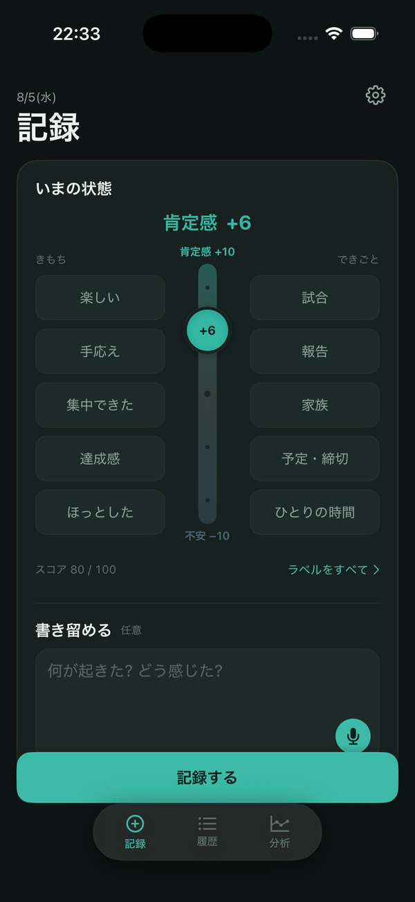

anchorLog
iOSアプリ（開発中）
気分を「不安 −10 〜 肯定感 +10」のスライダー、「きもち」と「できごと」のラベル、音声入力のメモで記録するiOSアプリ。Apple Watchのバイタルデータと合わせて、気分の変動を読み解くアルゴリズムを開発しています。

医療情報技師
医療・ヘルスケアの課題を、Claudeを使って形にしています。Built with Claude: Japan 2026 では、保健事業の効果を10年先まで見通す財政シミュレーターを作ります。
医療情報技師と応用情報技術者の知識を土台に、医療データとシステムの両面から現場の課題を見ています。フリーランスで医療・ヘルスケア領域の新規事業開発に取り組み、Stanford Biodesignの手法で現場のニーズを探し、アイディアの検証から事業化の判断までを一人で回せるよう、Claudeを使って仕組み化してきました。
iOSアプリ（開発中）
気分を「不安 −10 〜 肯定感 +10」のスライダー、「きもち」と「できごと」のラベル、音声入力のメモで記録するiOSアプリ。Apple Watchのバイタルデータと合わせて、気分の変動を読み解くアルゴリズムを開発しています。

Claudeスキル群
医療・ヘルスケアのアイディアを、撤退基準・結果を最も左右するパラメータ・未確認事実のログという3つの軸で検証するスキル。これまで約20件のアイディア検証に使ってきました。テーマの発案、関係者へのヒアリング項目づくり、検証結果のHTML化まで、前後の工程も別スキルとして揃えています。
Claudeスキル
システム同士、医療機関とベンダー、クラウド事業者の間の連携について、データの引き渡し点ごとに起こりうる障害を洗い出し、事前に決めておくべき責任範囲を表と全体図にまとめます。
市町村や事業者がフレイル予防などの保健事業を企画するとき、「何年後に、いくら医療費・介護費が変わるか」を示す必要があります。ところが介護費の差は年を追うごとに広がるため、契約期間の1〜5年だけで評価すると効果を大きく見落とします。成果連動型の契約（PFS）に取り組む自治体への内閣府の調査でも、約8割が「適正な成果指標・評価方法の設定が困難」を課題の最多に挙げ、医療費削減のような本来の成果を短期間で確認できないことが、支払条件を決める難しさの理由として挙がっています。
出典：内閣府「成果連動型民間委託契約に係るアンケート調査の結果について」（2019年、PFSに取り組む34自治体が対象）
病気ごとの状態・費用・効果を部品として差し替えられる作りにします。計算はコードが担い、Claudeはモデルの構造と根拠と説明を担います。